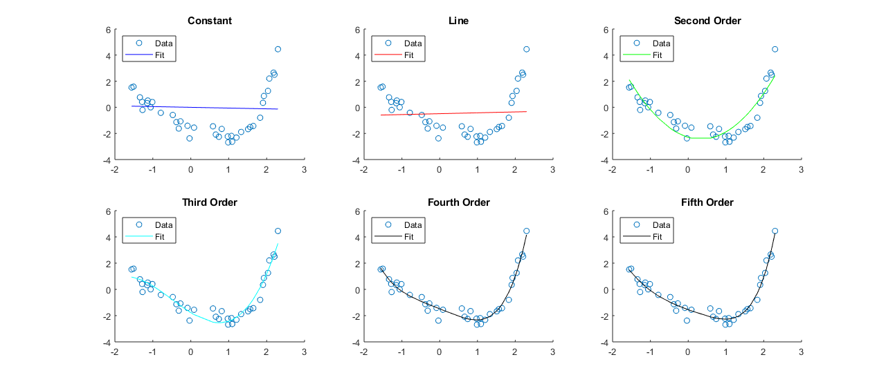
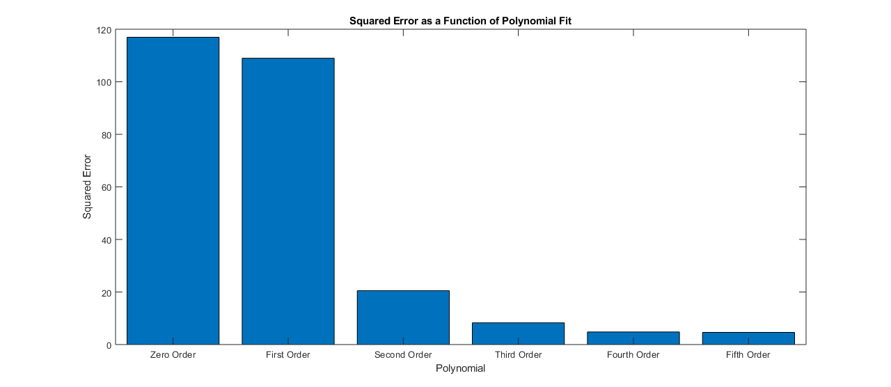

Contents
Homework2 - Question 2 - Matthew DeVerna
2. Polynomial Regression
load('regress1.mat')
scatter(x, y)
data = [ones(length(x),1), x, x.^2, x.^3, x.^4, x.^5 ] ;
[U,S,V] = svd(data(:,2));
y_star = U'*y ;
S_pound = diag_P_INVER(S) ;
beta_star_opt = S_pound * y_star ;
beta = V*beta_star_opt ;
beta_opt_1 = V*beta_star_opt
beta_opt_1a = V * S_pound * y_star
beta_opt_1b = V * S_pound * U' * y
the_short_cut_method = y'*x/(x'*x)
sprintf('As you can see, all three forms of the equation return the same value for beta_opt.\n')
beta_opt_Func1 = x*beta_opt_1 ;
line = data(:,1:2) ;
beta_opt2 = linear_Reg(line,y)
order2 = data(:,1:3) ;
beta_opt3 = linear_Reg(order2 ,y)
order3 = data(:,1:4) ;
beta_opt4 = linear_Reg(order3,y)
order4 = data(:,1:5) ;
beta_opt5 = linear_Reg(order4,y)
order5 = data(:,1:6) ;
beta_opt6 = linear_Reg(order5,y)
beta_opt_Func2 = line*beta_opt2 ;
beta_opt_Func3 = order2*beta_opt3 ;
beta_opt_Func4 = order3*beta_opt4 ;
beta_opt_Func5 = order4*beta_opt5 ;
beta_opt_Func6 = order5*beta_opt6 ;
subplot(2,3,1)
scatter(x,y)
hold on
plot(x, beta_opt_Func1, 'b')
title('Constant')
subplot(2,3,2)
scatter(x,y)
hold on
plot(x, beta_opt_Func2, 'r')
title('Line')
subplot(2,3,3)
scatter(x,y)
hold on
plot(x, beta_opt_Func3, 'g')
title('Second Order')
subplot(2,3,4)
scatter(x,y)
hold on
plot(x, beta_opt_Func4, 'c')
title('Third Order')
subplot(2,3,5)
scatter(x,y)
hold on
plot(x, beta_opt_Func5, 'k')
title('Fourth Order')
subplot(2,3,6)
scatter(x,y)
hold on
plot(x, beta_opt_Func6, 'k')
title('Fifth Order')
for ii = 1:6
subplot(2,3,ii)
legend('Data', 'Fit', 'Location', 'northwest')
end
beta_opt_1 =
-0.0571
beta_opt_1a =
-0.0571
beta_opt_1b =
-0.0571
the_short_cut_method =
-0.0571
ans =
'As you can see, all three forms of the equation return the same value for beta_opt.
'
beta_opt2 =
-0.4871
0.0675
beta_opt3 =
-2.2941
-0.8513
1.2648
beta_opt4 =
-1.7691
-1.8163
0.6910
0.4776
beta_opt5 =
-1.4816
-1.1568
-0.0273
0.0665
0.2735
beta_opt6 =
-1.5450
-1.0565
0.1832
-0.0814
0.1843
0.0490

Finding Squared Error and Plotting that
constant_SE = sum((y - beta_opt_Func1).^2)
line_SE = sum((y - beta_opt_Func2).^2)
order2_SE = sum((y - beta_opt_Func3).^2)
order3_SE = sum((y - beta_opt_Func4).^2)
order4_SE = sum((y - beta_opt_Func5).^2)
order5_SE = sum((y - beta_opt_Func6).^2)
all_sqrd_err = [constant_SE, line_SE, order2_SE, order3_SE, order4_SE, order5_SE] ;
orders = {'Zero Order' 'First Order' 'Second Order' 'Third Order' 'Fourth Order' 'Fifth Order'} ;
orders = reordercats(categorical(orders'), {'Zero Order' 'First Order' 'Second Order' 'Third Order' 'Fourth Order' 'Fifth Order'}) ;
figure
bar(orders, all_sqrd_err)
title('Squared Error as a Function of Polynomial Fit')
ylabel('Squared Error')
xlabel('Polynomial')
constant_SE =
116.9467
line_SE =
108.9660
order2_SE =
20.5002
order3_SE =
8.2932
order4_SE =
4.7974
order5_SE =
4.6501

Best Fit Answer
answer = sprintf('Reviewing the plot of squared error we can see that the largest reduction in error comes as we move from the first order to the second order\npolynomial. Additionally, we see a relatively large reduction in error with the third order polynomial as well.\n However, we can see at the end of this fit line in the negative space (on the left), that the line begins to dip back down as the data continues upward.\n\n Noticing this, I would choose the second order fit. It captures the general shape/trend of the data without the need for another parameter which may not generalize.')
answer =
'Reviewing the plot of squared error we can see that the largest reduction in error comes as we move from the first order to the second order
polynomial. Additionally, we see a relatively large reduction in error with the third order polynomial as well.
However, we can see at the end of this fit line in the negative space (on the left), that the line begins to dip back down as the data continues upward.
Noticing this, I would choose the second order fit. It captures the general shape/trend of the data without the need for another parameter which may not generalize.'